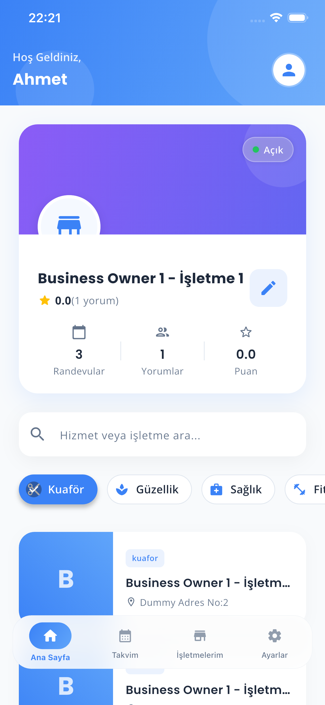

İşletmeniz kontrolünüzde
İşletme modülü ile randevuları yönetin, müşterilerinizi takip edin ve performansınızı analiz edin.
Günlük Randevu Akışı
Günlük randevu akışınızı takip edin. Onay bekleyen, tamamlanan ve iptal edilen randevuları görün.
Müşteri Bilgileri
Müşteri bilgilerini hızlıca görüntüleyin. Geçmiş randevular, notlar ve iletişim detayları bir arada.
Performans Özeti
İşletme performans özetine ulaşın. Günlük, haftalık ve aylık istatistiklerle büyümenizi takip edin.

Geniş Ekran Yönetimi
İşletmenizi Tek Bakışta Yönetin
İşletmenizin özet performansını ana ekranda tek bakışta takip edin.
Arama ve kategori akışıyla farklı işletmeleri inceleyerek sektörü daha yakından görün.
Profil ve işletme düzenleme aksiyonlarına hızlı erişimle yönetimi merkezileştirin.
Tüm İşletmeleriniz Bir Arada
Sahip olduğunuz tüm işletmeleri düzenli kart yapısıyla tek ekranda görüntüleyin.
Her işletmeye ayrı ayrı ulaşarak ilgili randevu akışını hızlıca yönetin.
Çoklu işletme yönetimini sadeleştirip operasyon takibini kolaylaştırın.
Hızlı ve Net Randevu Yönetimi
Bekleyen randevu taleplerini tek listede hızlı ve net biçimde yönetin.
Onaylama, reddetme, mesaj gönderme ve yeniden planlama işlemlerini tek yerden yapın.
Takvim ve onaylı randevulara kısa yollarla operasyonu kesintisiz sürdürün.
Kesinleşen Müşteri Akışını İzleyin
Onaylanmış randevularınızı net bir görünümle takip edin.
Gerekli durumlarda randevu onayını geri çekerek planınızı yeniden şekillendirin.
Kesinleşen müşteri akışını düzenli biçimde izleyerek gününüzü daha iyi planlayın.
Zaman Yönetimini Kontrol Edin
Tüm randevularınızı takvim görünümünde tarih bazlı olarak yönetin.
Belirli bir günü seçerek o tarihe ait yoğunluğu ve planı anında görün.
Yaklaşan randevu önizlemeleriyle zaman yönetimini daha kontrollü hale getirin.
Günlük Akışı Detaylı İnceleyin
Seçtiğiniz günün tüm randevularını saat bazlı detaylı bir akışta inceleyin.
Onaylı ve tamamlanan randevu sayılarını tek bakışta karşılaştırın.
Çalışma saatleri ve günlük yoğunluk görünümüyle gün planlamasını güçlendirin.
Tüm Görüşmeler Tek Bir Listede
Müşterilerle olan tüm konuşmalarınızı tek mesaj kutusunda düzenli biçimde görüntüleyin.
Son mesaj ve tarih bilgileriyle önemli görüşmeleri kolayca önceliklendirin.
Sohbete tek dokunuşla geçerek iletişimi hızlı ve profesyonel biçimde sürdürün.
Hesap ve Performans Özeti
Hesap bilgilerinizi, istatistiklerinizi ve işletme özetlerinizi tek profilde toplayın.
Sahip olduğunuz işletmeleri ve genel performansınızı daha bütüncül görün.
Profil ekranı sayesinde işletme hesabınızı daha güven veren bir sunumla yönetin.
İş Akışınızı Özelleştirin
Hesap, görünüm, gizlilik ve destek ayarlarınızı tek merkezden yönetin.
Bildirim, konum ve tema tercihlerini iş akışınıza uygun şekilde özelleştirin.
Satın alma, yardım ve hesap işlemlerine hızlı erişimle kontrolü elinizde tutun.
Üyelik ve Güvenlik Yönetimi
Hesap durumunuzu ve üyelik bilgilerinizi güvenli bir alanda görüntüleyin.
Şifre değiştirme ve hesap silme gibi kritik işlemleri tek ekrandan yönetin.
İş hesabınızla ilgili temel bilgilere sade ve profesyonel bir yapıda ulaşın.
Müşteri Gözünden İşletmeniz
İşletme profilinizi müşterinin gördüğü deneyime yakın bir yapıda inceleyin.
İletişim, hizmet, çalışma saati ve konum detaylarını bütünlüklü biçimde görün.
Profilinizin dışarıya nasıl yansıdığını kontrol ederek daha güçlü bir sunum oluşturun.
İşletme Bilgilerini Güncel Tutun
İşletme bilgileri, görseller, hizmetler ve çalışma saatlerini tek formda düzenleyin.
Logo, fotoğraf ve konum seçimleriyle profilinizi daha ekseksiz hale getirin.
Yeni işletme oluşturma ve mevcut işletmeyi güncelleme sürecini tek akışta tamamlayın.
En Doğru Slot Paketini Seçin
İşletmeniz için uygun slot paketlerini karşılaştırarak en doğru seçimi yapın.
Paket içeriklerini ve toplam maliyeti net biçimde görerek satın alma kararını kolaylaştırın.
Slot yönetimini daha planlı hale getirip hizmet kapasitenizi destekleyin.
Randevuları Kolayca Güncelleyin
Mevcut bir randevuyu yeni tarih ve saat seçenekleriyle kolayca yeniden planlayın.
Müşteri ve hizmet bilgisini aynı ekranda görerek doğru karar verin.
Uygun zaman aralıklarını seçip değişikliği hızlıca tamamlayarak süreci aksatmayın.
Hassas Konum Belirleme
İşletme konumunu harita üzerinden doğrudan seçerek daha doğru yer bilgisi belirleyin.
Mevcut konumunuza hızla gidip seçim sürecini pratik hale getirin.
Kaydetmeden önce koordinatları net biçimde görerek konum bilgisini güvenle onaylayın.